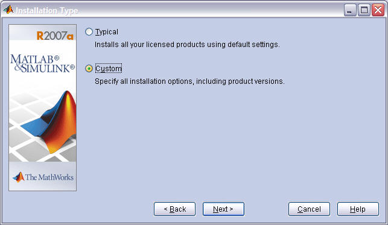
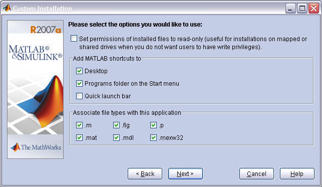
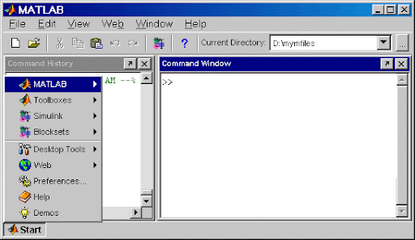

📊 MATLAB Introduction
MATLAB (short for Matrix Laboratory) is a high-performance language and environment for technical computing, visualization, and programming. Widely used in engineering, science, and academia.
📥 Installing MATLAB
To use MATLAB on your system, either:
🖼️ Setup Screens



💾 MATLAB IDE Overview
The default MATLAB desktop contains:
- Command Window — Execute commands interactively
- Editor — Write and save scripts and functions
- Workspace — View variables in memory
- Current Folder — File browser
💡 Pro Tip: You can run simple commands directly in the Command Window without saving a script.